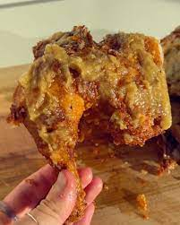

Garlic Tongdak A.K.A Garlic Fried Chicken

Description
Let's just continue down the theme of Dooby recipes. The garlic tongdak was featured on her Youtube awhile back. It has left craving for some crispy garlicky fried chicken. These recipes are becoming recipes that I want to cook myself now. Shall I try some fried chicken tonight.
Ingredients
- 1 whole chicken
- Batter
- 1/2 cup AP flour
- 1/2 cup corn starch
- 1/2 tbsp turmeric powder
- 1 cup ice water
- Garlic Sauce
- 5 garlic bulbs
- 2 garlic (optional)
- 1 tbsp olive oil
- 1/2 tbsp sesame oil
- 1 tbsp honey
- 1 tsp black pepper
- 1 tsp kosher salt
- oil to fry
Steps
Garlic Sauce
- Cut the top off the garlic bulb.
- Place the garlic bulbs on aluminium foil and drizzle in the olive oil. Wrap it tightly and bake it at 250C / 400F for 30 minutes.
- Squeeze out the baked garlic cloves. Add in the rest of the ingredients. For more garlicky heat, micorplane raw garlic in the sauce in the end.
Chicken
- Spatchcock the chicken. Cut down the center of the chicken breast. Pop open the center collar bone and flatten. Dislocate the joint connecting the thigh to the body so that the chicken lays flat.
- Pat the chicken dry with a paper towel and salt liberally. Keep it uncovered in the fridge for at least an hour, up to overnight. This process allows all the excess moisture to be drawn out of the chicken and a crispier fry.
- Prepare a large pot with ample oil to fry. Heat on high until the oil reaches 170C / 340F. (We’ll be frying it twice, once at a lower temperature around 160C/320F and again at 180C/355F. You want the oil to be higher because the temperature will drop once we put the chicken in!) If you don’t have a thermometer, fry a small piece of chicken in- the chicken should drop till the middle of the oil and slowly bounce back up, with a clear sizzling sound.
- Prepare the batter and dip the chicken. Make sure the batter coats all of the chicken.
- Gently drop the chicken into the oil.
- Using a sieve, fish out any of the excess batter that floats to the top. You might think that there’s not enough batter on the chicken and that the chicken looks.. naked. Trust the process, the batter should be so thin that it barely covers the chicken and the result will be super golden brown and crunchy.
- Fry on each side for about 10 minutes on each side. The cook time will depend on the size of the bird. It should be around 6 minutes per pound of meat.
- Take out once golden and let it rest for 10 minutes.
- Heat the oil back on high to 180C and double-fry again for 1 minute on each side.
- Place the chicken on a wired rack and let it rest again.
- Smother in the garlic sauce and enjoy!